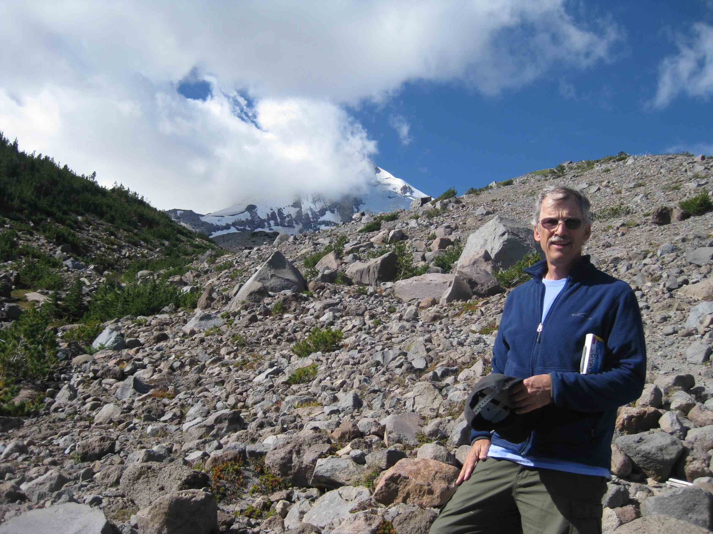

Rob McCaffrey
Dept. of Geology
(Retired)
Portland State University
E-mail:
mccafr@gmail.com
or
r.mccaffrey@pdx.edu
B.S., Boston College 1976
Ph.D., UC Santa Cruz 1981
PostDoc, MIT 1982-84
AFGL Scholar, 1984-86
Research Scientist, MIT 1986-88
Professor of Geophysics, RPI, 1988-2010
Adjunct Research Professor, Portland State, 2010-2019
I am a geophysicist with interests in tectonic plate motions, crustal deformation, earthquakes, GPS and seismology.
Miscellaneous stuff
Movie
of transient strain rates in CA since 1992 (2nd invariant)
SCEC Presentation
on time-dependent crustal deformation in California.
Appearance in OPB Oregon Field Guide's
Unprepared
.
2015 GPS velocity field map
(North America reference)
2015 PNW vectors file
(North America reference, from McCaffrey et al., 2016).
NY Times article on Sumatra earthquake
Stone Age Apocalypse
about eruption of Toba.
Story on AGU presentation in the Honolulu Star Bulletin
Interview on German radio
Research
US Pacific Northwest
Indonesia
Toba Caldera
Sumatra
Output
Publications
Reports
My CV (pdf)
Software
DEFNODE/TDEFNODE
MT5 Waveform analysis
Last update 12/28/2020 11:40
{kind=link}